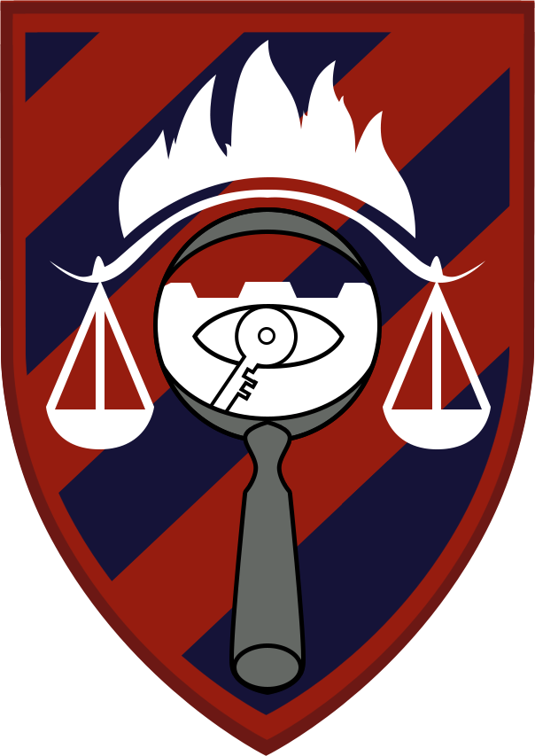

שירות צבאי
יחידת מצ''ח 6015 (2013-2016)
ראש אגף תיקי חקירות אלימות במשפחה ונתוני תקשורת במדור פיקוח חקירות של יחידת מצ''ח 6015 בצה''ל.
תפקיד הדורש עבודה תחת לחץ ומשלב מיומנויות של שליטה בתוכנות מחשב וחשיבה מהירה, על מנת לטפל במידע באופן הנדרש ובהתאם לדרישות הצבא.
- רמת סיווג גבוהה
- טיפול בתיקים פליליים, הנוגעים בנושאים הרגישים של אלימות במשפחה
- מעקב, בקרה ושליטה מקיפים על נתוני התקשורת הסלולארית של החשודים
- יצירת קשר רצוף עם תחנות המשטרה, בתי המשפט וחברות הסלולאר, עבור קבלת מידע ראשוני מהשטח.
